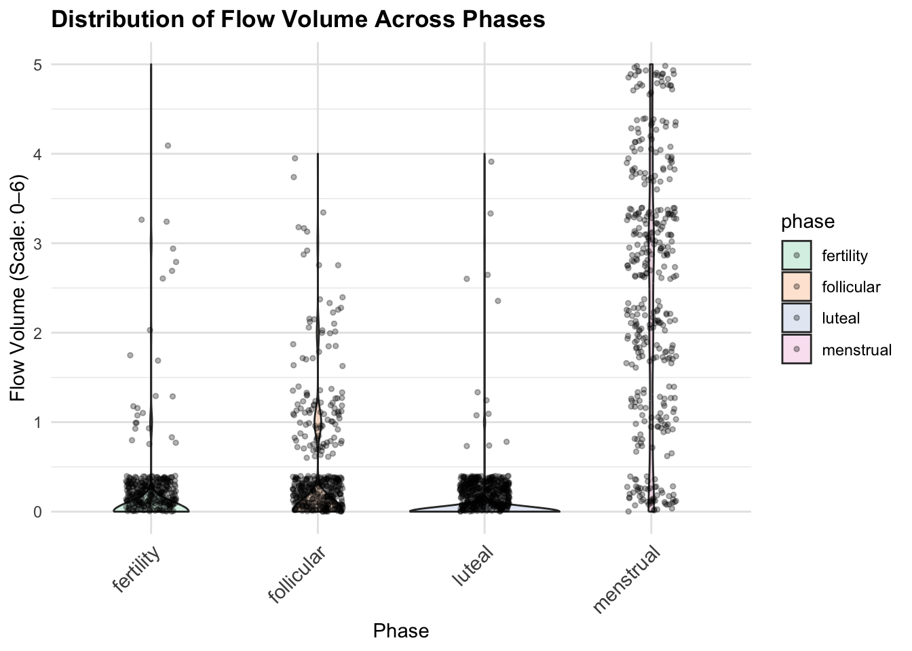

HORMONE & SYMPTOMS: EXPLORATORY DATA ANALYSIS
This analysis explores how hormone levels (estrogen and LH) and self-reported symptoms (mood swings, flow volume, and appetite) vary across menstrual cycle.
Luteinizing hormone (LH) & Estrogen
We want to examine average estrogen and LH levels across menstrual cycle phases, to see if hormonal patterns match biological expectations.
hormone_avg <- hormone_symptoms_eda|>
group_by(phase) |>
summarise(
estrogen_mean = mean(estrogen, na.rm = TRUE),
lh_mean = mean(lh, na.rm = TRUE),
.groups = "drop"
)
ggplot(hormone_avg, aes(x = phase)) +
geom_line(aes(y = estrogen_mean, color = "Estrogen", group = 1), size = 1) +
geom_line(aes(y = lh_mean, color = "LH", group = 1), size = 1) +
geom_point(aes(y = estrogen_mean, color = "Estrogen"), size = 3) +
geom_point(aes(y = lh_mean, color = "LH"), size = 3) +
labs(title = "Average Estrogen and LH Across Cycle",
x = "Phase", y = "Hormone Level", color = "Hormone") +
theme_minimal()+
theme(
axis.text.x = element_text(angle = 45, hjust = 1, size = 11),
plot.title = element_text(face = "bold"),
panel.grid.major = element_line(color = "grey90")
)
Estrogen levels are highest in the fertility (ovulatory) phase, second highest in luteal, and relatively low in menstrual, gradually rising from follicular to lluteal. Overall, LH levels are much lower than estrogen, peaking sharply during fertility phase, and remaining low in the other phases.
Moodswing Distribution Across Phases
Using violin plots, we want to assess whether menstrual cycle phases influence mood swing intensity.
# Mood swing
ggplot(hormone_symptoms_eda, aes(x = phase, y = moodswing_score, fill = phase)) +
geom_violin(trim = TRUE, alpha = 0.5) +
geom_jitter(width = 0.15, alpha = 0.3, size = 1) +
scale_y_continuous(limits = c(0,5), breaks = 0:5) +
labs(
title = "Distribution of Mood Swing Intensity Across Phases",
x = "Phase",
y = "Mood Swing (Scale: 0–5)"
) +
theme(
axis.text.x = element_text(angle = 45, hjust = 1, size = 11),
plot.title = element_text(face = "bold"),
panel.grid.major = element_line(color = "grey90")
)
The violin plots show significant inter-individual variability. Menstrual phase has the highest mood swing intensity (right-skewed distribution, peak around 1.85), whereas luteal phase shows lower values with a wider base (more individuals with low mood swings).
Average Mood Swing Across Phases
To understand general moodswing trends, we can summarize the average mood swing intensity across phases.
symptom_means <- hormone_symptoms_eda |>
group_by(phase) |>
summarise(
avg_moodswing = mean(moodswing_score, na.rm = TRUE),
.groups = "drop"
)
# Mood swing single line plot
ggplot(symptom_means, aes(x = phase, y = avg_moodswing, group = 1)) +
geom_line(aes(color = "Mood Swing"),size = 1.5, alpha = 0.7, show.legend = FALSE) +
geom_point(aes(color = "Mood Swing"),size = 3, show.legend = FALSE) +
geom_text(
aes(label = round(avg_moodswing, 2)),
vjust = -1,
size = 4,
fontface = "bold"
) +
labs(
title = "Average Mood Swing Intensity Across Menstrual Cycle Phases",
subtitle = "Higher values indicate more severe mood swings (Scale: 0–4)",
x = "Phase",
y = "Average Mood Swing Intensity"
) +
ylim(0, 4)+
theme_minimal()+
theme(
axis.text.x = element_text(angle = 45, hjust = 1, size = 11),
plot.title = element_text(face = "bold"),
panel.grid.major = element_line(color = "grey90")
)
Average mood swing intensity is highest in menstrual phase (1.85), lowest in luteal phase (1.41), with intermediate levels in follicular and fertility phases.
Flow Volume Distribution Across Phases
Here, we assessed flow volume distribution patterns, and visualize flow volume variation across phases with violin plots.
#violin
ggplot(hormone_symptoms_eda, aes(x = phase, y = flow_volume_score, fill = phase)) +
geom_violin( alpha = 0.5) +
geom_jitter(width = 0.15, alpha = 0.3, size = 1) +
labs(
title = "Distribution of Flow Volume Across Phases",
x = "Phase", y = "Flow Volume (Scale: 0–6)"
) +
scale_y_continuous(limits = c(0,5), breaks = 0:5) +
theme_minimal()+
theme(
axis.text.x = element_text(angle = 45, hjust = 1, size = 11),
plot.title = element_text(face = "bold"),
panel.grid.major = element_line(color = "grey90")
)
Luteal phase shows a right-skewed distribution, indicating most low-flow observations but a few high-flow days. Menstrual phase is narrow and tall, indicating consistently higher flow intensity.
Average Flow Volume Across Phases
We looked at average flow volume to observe general trends across the menstrual cycle.
cycle_avg <- hormone_symptoms_eda |>
group_by(phase) |>
summarise(
avg_flow_volume = mean(flow_volume_score, na.rm = TRUE),
avg_appetite = mean(appetite_score, na.rm = TRUE),
.groups = "drop"
)
cycle_avg <- cycle_avg |>
mutate(label_y = ifelse(row_number() == 1,
avg_flow_volume + 0.3, # move label up for first point
avg_flow_volume + 0.1))
# Flow Volume
ggplot(cycle_avg, aes(x = phase, y = avg_flow_volume, group = 1)) +
geom_line(aes(color = "Flow Volume"), size = 1.2, show.legend = FALSE) +
geom_point(aes(color = "Flow Volume"), size = 3, show.legend = FALSE) +
geom_text(aes(y = label_y, label = round(avg_flow_volume, 2)),
size = 4, fontface = "bold") +
labs(title = "Average Flow Volume Across Phases",
subtitle = "Higher values indicate more severe flow volume (Scale: 0-5)",
x = "Phase", y = "Flow Volume Score") +
theme_minimal() +
theme(
axis.text.x = element_text(angle = 45, hjust = 1, size = 11),
plot.title = element_text(face = "bold"),
panel.grid.major = element_line(color = "grey90")
)
Menstrual phase has the highest average flow (2.38), whereas luteal is the lowest (0.03). Average flow during fertility and follicular phases is 0.07 and 0.23, respectively.
Average Appetite Across Phases
Here, we look at average appetite to observe general trends across the menstrual cycle.
# Appetite
ggplot(cycle_avg, aes(x = phase, y = avg_appetite, group = 1)) +
geom_line(aes(color = "Appetite"), size = 1.2, show.legend = FALSE) +
geom_point(aes(color = "Appetite"), size = 3, show.legend = FALSE) +
geom_text(aes(label = round(avg_appetite, 2)), vjust = -0.8, size = 4, fontface = "bold") +
coord_cartesian(clip = "off") +
labs(title = "Average Appetite Across Phases",
subtitle = "Higher values indicate higher appetite (Scale: 0–5)",
x = "Phase", y = "Appetite Score") +
theme_minimal() +
theme(
plot.margin = margin(t = 20),
axis.text.x = element_text(angle = 45, hjust = 1, size = 11),
plot.title = element_text(face = "bold"),
panel.grid.major = element_line(color = "grey90")
)
Average appetite score was highest in the fertility phase (2.96), a pattern that visually paralleled the estrogen trend we saw earlier. This warrants formal statistical testing, where we can investigate the relationship between the two (using a linear mixed model).